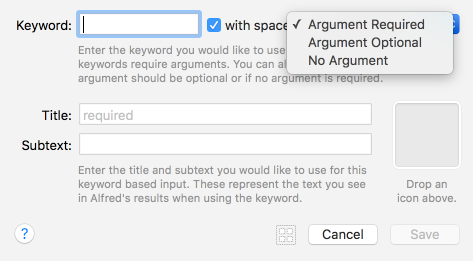
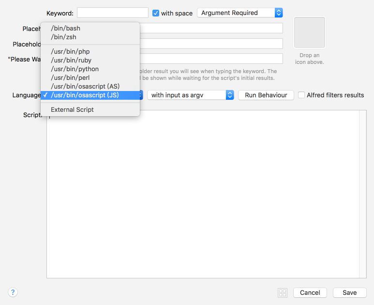
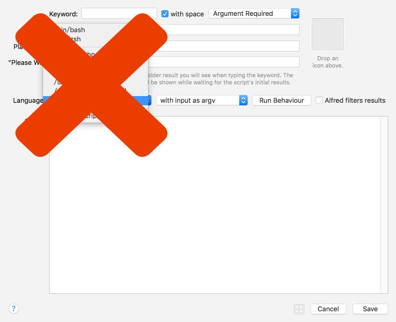

Rock Alfred in NodeJS
- Rocky Wu
Alfred Workflow
HotKey
HotInput
Alfred Hot Inputs

Alfred Hot Inputs
Keyword
Alfred Hot Inputs
Script Filter
Alfred Hot Inputs
Script Filter
How to run workflow in NodeJS
/usr/bin/env node <<-'CODE'
const q = '{query}'
const res = {
items: [
{
title: q,
subtitle: `subtitle ${q}`,
}
]
}
console.log(JSON.stringify(res))
CODE
How is require?
/usr/bin/env node <<-'CODE'
require('./')
CODE
How is require?
/usr/bin/env node <<-'CODE'
require('./')('{query}')
CODE
Demo
IMDB query movies stars